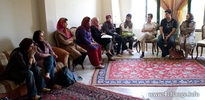

|
|
اولین کارگاه کمپین یک میلیون امضا جهت نقد وبررسی لایحه حمایت از خانواده برگزار شد
جمعه11 مرداد 1387

تغییر برای برابری : اولین کارگاه کمپین یک میلیون امضا جهت نقد وبررسی لایحه حمایت از خانواده در تاریخ 11/5/87 در تهران برگزار شد . در این کارگاه جمعی از فعالان کمپین در تهران ،سمنان و اصفهان حضور داشتند .در این جلسه از سرکار خانم زهره ارزنی وکیل پایه یک دادگستری دعوت شد تا لایحه حمایت از خانواده را مورد بررسی قرار داده و نیز انتقادات حقوقی وارده به لایحه را با مشارکت کنندگان به مشورت بگذارد .
اين لايحه بنا به ادعای ارائه دهندگان اش به دليل «لزوم تطبيق قوانین جاری با مسائل روز» و «رفع كاستي ها و نواقص در قوانين موجود ِ حاكم بر نهاد خانواده» پيشنهاد شده است، حال آن که مواد مندرج در لایه چنین ادعایی را رد می کند. این لایحه نه تنها تطبيقي با واقعيات زندگي زنان امروز ايراني ندارد بلكه قوانین پیشنهادی آن عقب گردي 42 ساله را به نمایش می گذارد